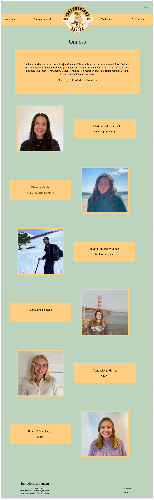

Made by: Tone, Marit, Viktoria, Alexandra, Hallvard and Hanna.
Date: xx.xx.2023
Our client is imaginary and called "Organisasjonen for nye studenter i Trondheim // Inkluderingsbanden". This Organisation works to improve everyday-life for both new and old students in Trondheim. They feel that a website where all student activities and opportunities in the city are presented would be a great way to do this. They also want to include practical information about Trondheim.
The purpose of this website is to help new students in Trondheim to get to know the city and have a smooth start as students here. It will give an overview over all the different things you can do and all you need to know as a new student. The goal is that they become integrated faster and easier. This includes giving tips on how to easily find good routines in your everyday life, as it shows you how to get around and where you should be. Furthermore, it wants to socialize the students as it is meant as a guide for students looking for new activities. This includes sport activities and voluntary activities. As the page describes what you do in the different organizations, new students can meet equal minded people and create new friendships by using this page. The goal is also to preserve the great student-culture for future students. Therefore, the most important student traditions will be described on this page. This includes events, student songs, etc.
The navigation structure of our website is not very complicated. From the homepage you can navigate to four different main pages (together with information about us and contact), which all have subsections one can navigate further into. There are no connections between the subsections of different main sections. Our website has a global navigation, with the header menu being the same for all pages. The sitemap of our website is:
This structure is intuitive to use.
The design choices are made with a focus of visibility, with a clean and aesthetic view and with a focus that it should be easy to navigate. We will use the same look though the whole page to make it look pulled together and carried out.
For the font, Times New Roman will be used through the webpage. The titles will be in size in 30, the subtitles will be in 25 and the text will be in 25. The color scheme we have chosen is a yellow-green combination to resemble the colors of NTNUI. The background will have the green color and the navigation bar will be yellow. The text will be black. The navigation bar will be positioned at the top of the page at all times. This way, it is alway easy accessible and you can always navigate to another page. We will have a footer at the bottom of all pages. This will include information about the creators and the organization of the page. It will have the contact information, such as e-mail of the company, such that the people visiting the page can get in contact with the creator for feedback or questions.
We think these choices will fulfill the goals of the webpage. As we aim towards students looking for information on studying in Trondheim, the information must be easy accessible. This is why the page must be clear, and easy to navigate through. The navigation bar at the top will give the student the ability to get an efficient overview over the page by just checking what each page consists of. Furthermore, by adding a footing with contact information enables the students to reach out if they have questions. We believe these choices will make it easier to integrate new students in the Trondheim-culture.
In this section we will give descriptions of the content of each page in our website together with a mockup of it.
This is the homepage, meaning that it is the first page visitors will see when they visit the website. It captures the visitors attention, and introduses them to the purpose of the site, to help students of Trondheim to have a great time!
The page shown under only have one picture, but the actual page will have a slideshow of pictures here. This will give the visitors an event better introduction to Trondheim and further interest them in checking out the website. Beside the picture (slideshow) there is a short text welcomming the visistor, and introducing the website.
At the top of the page there is a navigation bar with links to the other pages. There is also a picture of the logo of the organisation behind the webpage, Inkluderingsgjengen. Clicking on this logo will imediately bring the visitor back to the homepage.
This page will be about how to quickly and cheaply transport yourself around in the city of Trondheim. It will describe the important apps or websites for information. The page will have a transportation guide to the different campuses. It will also have a guide on the different means of transportation, and compare them. The criterias of comparison are: Price, speed and effort.
The aim of this page is to fulfill the students' need for an overview of the city. Even though Trondheim is not that big, it can be confusing to get around. Therefore, the page aims to make the geography of Trondheim more comprehensible and give an overview of the different transport possibilities. The design choices are made such that the information is accessible and the maps clearly stand out. There have not been made any specific design choices for this page.
This page will include an opportunity to send us a message where you type inn your email and the message you wish to send. This page is kept simple and will only display a way to contact us through the form in additon to the header and footer. This is a common way to contact webpages. When the submit button is pressed the page with change and display a message saying that your message has been sent.

The goal for this page is just to be informative and showcase the people behind the page and whom you can contact if there is anything you dont want to use the form for. There wil also be a picture of everyone in the organazation next to their name and position. This page will also include what the organazation is, and their goal with the page.
To meet the minimum requirement for Javascript applications, the following functions will be implemented:
List of file and folders
List of everything we need to get from our client
| filename | Description | In charge | Deadline |
|---|---|---|---|
| Homepage.html | Homepage | Hanna | 30.10 |
| Volunteerwork.html | Information about volunteerwork | Tone | 30.10 |
| Activites.html | Information about activities | Marit | 30.10 |
| transport.html | Information about transport | Viktoria | 30.10 |
| traditions.html | Information about traditions | Hallvard | 30.10 |
| contact.html | Page to reach us | Alexandra | 30.10 |
| aboutus.html | Information about us | Alexandra | 30.10 |
| style.css | The CSS for our webpage | Everyone | 15.11 |
| logo.png | Logo for our website | Tone | 3.10 |